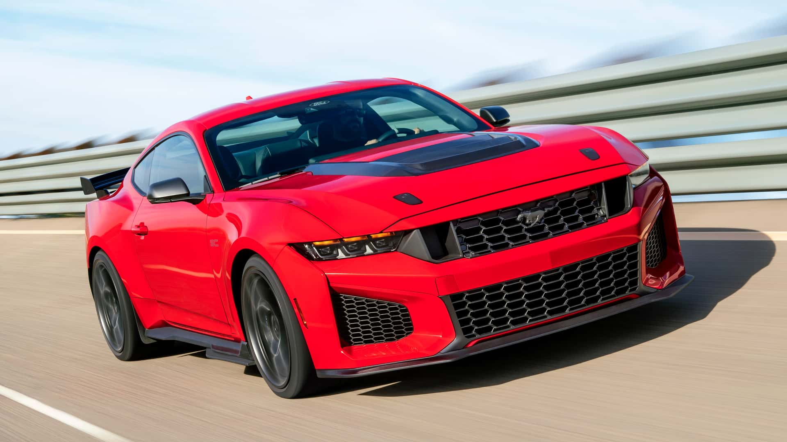

Mustang Dark Horse: O Lado Sombrio da Performance
Se a história da Ford é marcada pela democratização da velocidade, o Mustang Dark Horse é o manifesto moderno
dessa herança.
Lançado como a joia da coroa da sétima geração, ele é o Mustang com motor V8 aspirado mais potente já
produzido pela Ford,
projetado para ser um guerreiro das pistas que mantém a elegância para as ruas.
O Dark Horse é equipado com a quarta geração do lendário motor Coyote 5.0L V8, recalibrado para entregar
impressionantes 507 cv e 567 Nm de torque.
Com bielas vindas diretamente do Shelby GT500, ele foi construído para suportar as condições mais extremas de
pilotagem,
atingindo de 0 a 100 km/h em apenas 3,7 segundos.
No interior, a nostalgia encontra o futuro.
O painel digital imersivo de 12,4" é integrado a uma central multimídia de 13,2" (SYNC 4), oferecendo
telemetria em tempo real.
Destaque para o Drift Brake, um freio de mão eletrônico projetado para ajudar motoristas a explorarem as
pistas com a habilidade de um profissional.
O Dark Horse é a personificação do espírito indomável da Ford:
um carro que respeita o passado, mas que usa a tecnologia para dominar o presente.